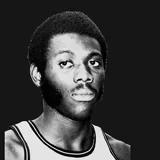
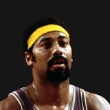
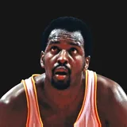
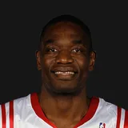
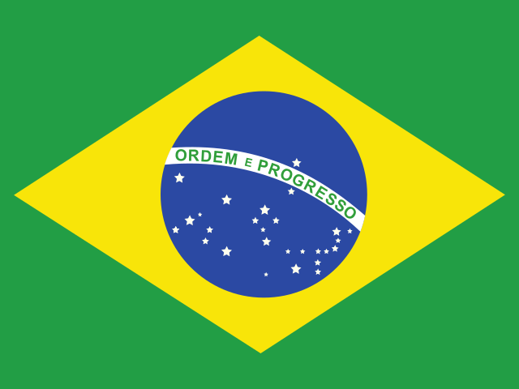

Philadelphia 76ers alumni
All 598 players who played for the Philadelphia 76ers franchise: 474 living, 123 deceased, 1 status unknown.
Syracuse Nationals (1949-50 to 1962-63) → Philadelphia 76ers (1963-64 to present)
At a glance
 Tommy Kearns, 90, is the oldest living former 76er (oldest 76ers).
Tommy Kearns, 90, is the oldest living former 76er (oldest 76ers).- Johnny Macknowski lived to 101, longer than any other 76er on record.
- 16 former 76ers reached 90; 1 is living.
- 12 of the 25 Hall of Famers who played for the franchise are living.
- Every player from the 1959-60 Syracuse Nationals has died, the most recent season for which that is true.
Oldest, youngest and most recent
Hall of Famers
12 living, 13 deceased.
Living

Deceased



Oldest living alum of each era
by first season with the franchiseBirths and deaths by decade
Not shown: 1 alum whose status is unknown.
Last surviving players
- 1949-50 All 11 players from the 1949-50 Syracuse Nationals have died. The last of them, Johnny Macknowski, died April 8, 2024.
- 1950-51 All 14 players from the 1950-51 Syracuse Nationals have died. The last of them, Johnny Macknowski, died April 8, 2024.
- 1951-52 All 11 players from the 1951-52 Syracuse Nationals have died. The last of them, Bill Gabor★1, died June 4, 2019.
- 1952-53 All 12 players from the 1952-53 Syracuse Nationals have died. The last of them, Bill Calhoun, died Dec. 17, 2024.
- 1953-54 All 14 players from the 1953-54 Syracuse Nationals have died. The last of them, Dick Knostman, died March 16, 2022.
- 1954-55 All 12 players from the 1954-55 Syracuse Nationals have died. The last of them, Jackie Moore, died April 9, 2026.
- 1955-56 All 10 players from the 1955-56 Syracuse Nationals have died. The last of them, Jim Tucker, died May 14, 2020.
- 1956-57 All 16 players from the 1956-57 Syracuse Nationals have died. The last of them, Forest Able, died Jan. 4, 2026.
- 1957-58 All 11 players from the 1957-58 Syracuse Nationals have died. The last of them, Bob Harrison★1, died March 3, 2024.
- 1958-59 Tommy Kearns is the last surviving member of the 1958-59 Syracuse Nationals (13-player roster; the other 12 have died).
- 1959-60 All 14 players from the 1959-60 Syracuse Nationals have died. The last of them, Barney Cable, died Jan. 26, 2026.
- 1960-61 Dave Gambee is the last surviving member of the 1960-61 Syracuse Nationals (12-player roster; the other 11 have died).
- 1961-62 to 1962-63 Dave Gambee, Paul Neumann and Lee Shaffer★1 are the last surviving members of each Syracuse Nationals roster from 1961-62 through 1962-63 (2 seasons; everyone else on those rosters has died). Roster sizes: 1961-62: 12 players, 1962-63: 13 players.
- 1964-65 Dave Gambee and Paul Neumann are the last surviving members of the 1964-65 Philadelphia 76ers (14-player roster; the other 12 have died).
From the season-by-season rosters (77 seasons). A season is listed only when its roster settles it: everyone has died, or up to three players are living and every other player has died. Seasons with a player whose status is unknown are left out.
First season, 1949-50
All 11 players from the 1949-50 roster have died. The last of them,  Johnny Macknowski, died April 8, 2024, at age 101.
Johnny Macknowski, died April 8, 2024, at age 101.
Most accomplished alumni
All alumni
by first season with the team| Feb. 12, 1917 | Died Nov. 9, 2009 | died at 92 | 1949-50 to 1952-53 | 202 | |
| March 5, 1925 | Died June 10, 1998 | died at 73 | 1949-50 to 1950-51 | 63 | |
| Jan. 14, 1928 | Died Feb. 5, 2007 | died at 79 | 1949-50 | 60 | |
| May 13, 1922 | Died June 4, 2019 | died at 97 | 1949-50 to 1954-55 | 307 | |
| July 19, 1923 | Died Jan. 18, 2002 | died at 78 | 1949-50 to 1950-51 | 127 | |
| April 11, 1920 | Died April 30, 2012 | died at 92 | 1949-50 | 60 | |
| Jan. 7, 1923 | Died April 8, 2024 | died at 101 | 1949-50 to 1950-51 | 117 | |
| June 27, 1924 | Died March 20, 1984 | died at 59 | 1949-50 to 1950-51 | 79 | |
| Nov. 13, 1922 | Died Nov. 10, 2007 | died at 84 | 1949-50 to 1951-52 | 194 | |
| May 19, 1928 | Died Dec. 10, 2015 | died at 87 | 1949-50 to 1963-64 | 996 | |
| Jan. 30, 1928 | Died May 5, 1998 | died at 70 | 1949-50 to 1959-60 | 600 | |
| Feb. 4, 1925 | Died April 13, 2015 | died at 90 | 1950-51 to 1951-52 | 104 | |
| May 18, 1925 | Died Nov. 2, 1982 | died at 57 | 1950-51 to 1952-53 | 177 | |
| Nov. 8, 1929 | Died June 17, 1976 | died at 46 | 1950-51 | 47 | |
| March 1, 1922 | Died Oct. 17, 2002 | died at 80 | 1950-51 | 31 | |
| March 20, 1918 | Died April 24, 2003 | died at 85 | 1950-51 | 16 | |
| Aug. 16, 1928 | Died Oct. 5, 2006 | died at 78 | 1951-52 to 1955-56 | 348 | |
| July 6, 1928 | Died Jan. 11, 2012 | died at 83 | 1951-52 to 1954-55 | 204 | |
| Sept. 18, 1923 | Died Feb. 13, 2010 | died at 86 | 1951-52 to 1952-53, 1954-55 to 1955-56 | 279 | |
| April 9, 1928 | Died Jan. 27, 2010 | died at 81 | 1951-52, 1956-57 | 17 | |
| Feb. 3, 1931 | Died March 21, 2014 | died at 83 | 1952-53 | 10 | |
| Nov. 4, 1927 | Died Dec. 17, 2024 | died at 97 | 1952-53 | 13 | |
| April 3, 1928 | Died Feb. 26, 2015 | died at 86 | 1952-53 to 1957-58 | 413 | |
| June 5, 1927 | Died Oct. 27, 2020 | died at 93 | 1952-53 | 62 | |
| April 28, 1927 | Died March 26, 2009 | died at 81 | 1953-54 | 2 | |
| April 17, 1928 | Died March 13, 2006 | died at 77 | 1953-54 | 23 | |
| Dec. 1, 1930 | Died June 19, 2018 | died at 87 | 1953-54 to 1955-56 | 214 | |
| Aug. 9, 1931 | Died March 16, 2022 | died at 90 | 1953-54 | 5 | |
| June 29, 1926 | Died Dec. 18, 2010 | died at 84 | 1953-54 | 60 | |
| Feb. 5, 1928 | Died Aug. 16, 2006 | died at 78 | 1953-54 | 16 | |
| May 21, 1930 | Died Oct. 3, 2011 | died at 81 | 1953-54 | 67 | |
| April 23, 1915 | Died Aug. 15, 1978 | died at 63 | 1953-54 | 5 | |
| April 13, 1932 | Died Oct. 1, 1969 | died at 37 | 1954-55 to 1955-56 | 141 | |
| July 17, 1932 | Died Feb. 26, 2009 | died at 76 | 1954-55 to 1964-65 | 834 | |
| Sept. 24, 1932 | Died April 9, 2026 | died at 93 | 1954-55 | 23 | |
| Dec. 11, 1932 | Died May 14, 2020 | died at 87 | 1954-55 to 1956-57 | 99 | |
| Sept. 2, 1933 | Died Sept. 21, 2012 | died at 79 | 1955-56 to 1958-59 | 254 | |
| July 27, 1932 | Died Jan. 4, 2026 | died at 93 | 1956-57 | 1 | |
| March 26, 1932 | Died Oct. 28, 2019 | died at 87 | 1956-57 to 1965-66 | 687 | |
| Aug. 12, 1927 | Died March 3, 2024 | died at 96 | 1956-57 to 1957-58 | 72 | |
| May 20, 1929 | Died Aug. 20, 2008 | died at 79 | 1956-57 | 19 | |
| Feb. 26, 1934 | Died Jan. 28, 1998 | died at 63 | 1956-57 to 1957-58 | 87 | |
| Nov. 3, 1934 | Died May 15, 2015 | died at 80 | 1956-57 to 1959-60 | 273 | |
| Aug. 8, 1932 | Died Aug. 12, 2022 | died at 90 | 1956-57 to 1959-60 | 187 | |
| Jan. 12, 1934 | Died July 20, 1987 | died at 53 | 1956-57, 1959-60 | 8 | |
| March 29, 1933 | Died Feb. 15, 2005 | died at 71 | 1956-57 | 11 | |
| July 2, 1931 | Died Dec. 13, 2001 | died at 70 | 1957-58 to 1964-65, 1966-67 to 1967-68 | 615 | |
| July 19, 1929 | Died Oct. 7, 2017 | died at 88 | 1958-59 | 34 | |
| Oct. 2, 1936 | Died Dec. 29, 2013 | died at 77 | 1958-59 to 1959-60, 1963-64 to 1964-65, 1970-71 | 302 | |
| June 26, 1936 | Died April 14, 2018 | died at 81 | 1958-59 to 1972-73 | 1,122 | |
| Oct. 6, 1936 | Living | 90 | 1958-59 | 1 | |
| Nov. 3, 1928 | Died Aug. 13, 2004 | died at 75 | 1958-59 to 1959-60 | 88 | |
| Oct. 2, 1936 | Died April 27, 2025 | died at 88 | 1959-60 to 1960-61 | 135 | |
| July 29, 1935 | Died Jan. 26, 2026 | died at 90 | 1959-60 to 1960-61 | 125 | |
| Nov. 9, 1932 | Died Aug. 13, 2024 | died at 91 | 1959-60 | 19 | |
| Dec. 11, 1931 | Died Dec. 12, 2024 | died at 93 | 1960-61 | 3 | |
| April 16, 1937 | Living | 89 | 1960-61 to 1966-67 | 475 | |
| Jan. 30, 1933 | Died April 5, 1988 | died at 55 | 1960-61 to 1961-62 | 143 | |
| July 13, 1937 | Died March 25, 2019 | died at 81 | 1960-61 | 2 | |
| May 18, 1936 | Died Oct. 10, 2022 | died at 86 | 1960-61 to 1962-63 | 181 | |
| Jan. 15, 1930 | Died July 2, 1998 | died at 68 | 1961-62 | 23 | |
| Jan. 30, 1938 | Living | 88 | 1961-62 to 1964-65 | 271 | |
| Jan. 21, 1939 | Died April 17, 1979 | died at 40 | 1961-62 | 4 | |
| Feb. 23, 1939 | Living | 87 | 1961-62 to 1963-64 | 196 | |
| Jan. 31, 1941 | Died July 12, 2018 | died at 77 | 1962-63 to 1963-64 | 81 | |
| March 16, 1940 | Died Nov. 13, 2009 | died at 69 | 1962-63 | 31 | |
| Feb. 22, 1940 | Died June 8, 2024 | died at 84 | 1962-63 to 1968-69 | 558 | |
| Sept. 4, 1936 | Died April 5, 2002 | died at 65 | 1962-63 to 1965-66 | 170 | |
| Nov. 22, 1941 | Died Sept. 11, 2019 | died at 77 | 1963-64 to 1964-65 | 25 | |
| Jan. 26, 1940 | Living | 86 | 1963-64 | 23 | |
| Aug. 21, 1936 | Died Oct. 12, 1999 | died at 63 | 1964-65 to 1967-68 | 277 | |
| Sept. 21, 1942 | Died Aug. 6, 2022 | died at 79 | 1964-65 | 24 | |
| Oct. 31, 1941 | Died Oct. 12, 2022 | died at 80 | 1964-65 to 1971-72 | 522 | |
| Sept. 22, 1942 | Died Aug. 16, 2025 | died at 82 | 1964-65, 1973-74 | 95 | |
| Jan. 7, 1942 | Died Nov. 2, 2014 | died at 72 | 1965-66 | 5 | |
| June 3, 1943 | Living | 83 | 1965-66 to 1971-72, 1974-75 to 1975-76 | 654 | |
| June 24, 1941 | Died Aug. 27, 2012 | died at 71 | 1965-66 | 6 | |
| Feb. 14, 1942 | Living | 84 | 1965-66 to 1970-71, 1975-76 | 454 | |
| Sept. 6, 1941 | Died April 10, 2026 | died at 84 | 1965-66 | 66 | |
| May 7, 1942 | Living | 84 | 1965-66 to 1966-67 | 13 | |
| Feb. 25, 1944 | Living | 82 | 1966-67 to 1970-71 | 304 | |
| Oct. 19, 1944 | Living | 81 | 1966-67 to 1967-68 | 144 | |
| Feb. 5, 1944 | Died Dec. 9, 2005 | died at 61 | 1967-68 | 19 | |
| Dec. 8, 1933 | Died Nov. 16, 2023 | died at 89 | 1967-68 to 1968-69 | 109 | |
| Aug. 3, 1945 | Living | 81 | 1967-68 | 6 | |
| July 15, 1941 | Living | 85 | 1968-69 to 1971-72 | 241 | |
| March 30, 1945 | Died April 19, 2021 | died at 76 | 1968-69 | 50 | |
| Oct. 11, 1938 | Died June 30, 2017 | died at 78 | 1968-69 to 1969-70 | 161 | |
| April 5, 1945 | Died Oct. 15, 2018 | died at 73 | 1968-69 | 27 | |
| May 9, 1942 | Died July 29, 2023 | died at 81 | 1968-69 to 1969-70 | 105 | |
| July 21, 1942 | Living | 84 | 1969-70 | 63 | |
| Dec. 29, 1946 | Living | 79 | 1969-70 to 1970-71 | 74 | |
| April 12, 1948 | Died Dec. 5, 2015 | died at 67 | 1969-70 | 1 | |
| July 1, 1943 | Living | 83 | 1969-70 to 1971-72 | 174 | |
| Sept. 7, 1944 | Died July 26, 2021 | died at 76 | 1970-71 | 5 | |
| Feb. 22, 1948 | Living | 78 | 1970-71 to 1972-73 | 131 | |
| Dec. 23, 1941 | Living | 84 | 1970-71 | 36 | |
| March 18, 1946 | Died Oct. 4, 1985 | died at 39 | 1970-71 to 1971-72 | 140 | |
| Feb. 9, 1949 | Living | 77 | 1970-71 to 1971-72 | 49 | |
| Jan. 20, 1937 | Living | 89 | 1970-71 | 82 | |
| April 4, 1939 | Died Sept. 25, 2015 | died at 76 | 1971-72 to 1972-73 | 74 | |
| Feb. 14, 1945 | Living | 81 | 1971-72 to 1976-77 | 409 | |
| May 9, 1949 | Living | 77 | 1971-72 | 6 | |
| March 28, 1940 | Living | 86 | 1971-72 to 1972-73 | 106 | |
| June 29, 1944 | Died Sept. 5, 2019 | died at 75 | 1971-72 to 1972-73 | 63 | |
| Nov. 2, 1949 | Living | 76 | 1971-72 | 79 | |
| Jan. 30, 1946 | Living | 80 | 1971-72 | 24 | |
| Feb. 22, 1943 | Living | 83 | 1972-73 to 1974-75 | 117 | |
| April 16, 1944 | Living | 82 | 1972-73 | 48 | |
| June 13, 1950 | Died Oct. 8, 2023 | died at 73 | 1972-73 to 1975-76 | 229 | |
| Oct. 16, 1941 | Living | 84 | 1972-73 | 7 | |
| March 10, 1940 | Died June 2, 2012 | died at 72 | 1972-73 to 1975-76 | 261 | |
| Nov. 13, 1946 | Died Jan. 25, 2006 | died at 59 | 1972-73 | 5 | |
| July 3, 1949 | Living | 77 | 1972-73 | 31 | |
| Nov. 27, 1945 | Living | 80 | 1972-73 | 82 | |
| Jan. 3, 1946 | Living | 80 | 1972-73 to 1973-74 | 82 | |
| Sept. 11, 1948 | Living | 78 | 1972-73 | 57 | |
| Nov. 12, 1945 | Died July 24, 2014 | died at 68 | 1972-73 | 78 | |
| July 8, 1948 | Died July 9, 2002 | died at 54 | 1972-73 | 48 | |
| Oct. 2, 1945 | Living | 81 | 1972-73 | 39 | |
| Aug. 23, 1951 | Living | 75 | 1973-74 to 1974-75 | 127 | |
| April 12, 1947 | Died May 29, 2024 | died at 77 | 1973-74 | 19 | |
| July 28, 1951 | Living | 75 | 1973-74 to 1980-81 | 415 | |
| Nov. 5, 1950 | Living | 75 | 1973-74 | 35 | |
| Sept. 7, 1942 | Died May 2, 2017 | died at 74 | 1973-74 | 75 | |
| Dec. 30, 1947 | Living | 78 | 1973-74 to 1981-82 | 668 | |
| June 11, 1946 | Died Nov. 19, 2017 | died at 71 | 1973-74 | 9 | |
| Sept. 2, 1951 | Living | 75 | 1974-75 to 1978-79 | 251 | |
| Dec. 8, 1948 | Died Jan. 7, 2001 | died at 52 | 1974-75 | 27 | |
| March 14, 1944 | Living | 82 | 1974-75 to 1975-76 | 150 | |
| Sept. 24, 1953 | Died March 7, 2022 | died at 68 | 1974-75 to 1975-76 | 77 | |
| Oct. 10, 1951 | Died March 9, 2004 | died at 52 | 1974-75 | 54 | |
| April 25, 1950 | Living | 76 | 1974-75 | 39 | |
| Sept. 7, 1952 | Died Nov. 9, 2008 | died at 56 | 1974-75 | 5 | |
| Jan. 25, 1945 | Died March 28, 2024 | died at 79 | 1974-75 | 4 | |
| Nov. 10, 1951 | Living | 74 | 1975-76 | 21 | |
| Oct. 19, 1954 | Died July 16, 2024 | died at 69 | 1975-76 to 1978-79 | 287 | |
| Jan. 11, 1957 | Died Aug. 27, 2015 | died at 58 | 1975-76 to 1981-82 | 448 | |
| Dec. 9, 1953 | Living | 72 | 1975-76 to 1977-78, 1986-87 | 245 | |
| Aug. 12, 1950 | Died Dec. 14, 2023 | died at 73 | 1975-76 to 1977-78 | 234 | |
| July 7, 1944 | Living | 82 | 1976-77 | 16 | |
| Nov. 24, 1949 | Living | 76 | 1976-77 to 1979-80 | 327 | |
| March 21, 1954 | Living | 72 | 1976-77 to 1977-78 | 36 | |
| Feb. 22, 1950 | Living | 76 | 1976-77 to 1986-87 | 836 | |
| Oct. 18, 1954 | Died May 23, 1980 | died at 25 | 1976-77 | 32 | |
| Aug. 4, 1950 | Died Sept. 21, 2014 | died at 64 | 1976-77 to 1981-82 | 482 | |
| Aug. 30, 1946 | Living | 80 | 1977-78 | 29 | |
| Dec. 26, 1955 | Living | 70 | 1977-78 | 6 | |
| Aug. 3, 1955 | Living | 71 | 1977-78 | 14 | |
| Sept. 8, 1956 | Living | 70 | 1978-79 to 1988-89 | 853 | |
| Dec. 18, 1951 | Living | 74 | 1978-79 to 1985-86 | 617 | |
| Feb. 6, 1955 | Living | 71 | 1978-79 to 1979-80 | 29 | |
| April 15, 1955 | Living | 71 | 1978-79 | 4 | |
| Aug. 10, 1949 | Living | 77 | 1978-79 | 37 | |
| June 16, 1952 | Living | 74 | 1978-79 to 1979-80 | 24 | |
| Oct. 19, 1953 | Living | 72 | 1979-80 to 1981-82 | 190 | |
| Aug. 7, 1956 | Living | 70 | 1979-80 to 1984-85 | 426 | |
| June 28, 1957 | Living | 69 | 1979-80 | 40 | |
| July 14, 1956 | Died July 2022 | died at about 66 | 1979-80 | 23 | |
| Sept. 3, 1957 | Died Feb. 4, 2024 | died at 66 | 1980-81 to 1982-83 | 191 | |
| July 26, 1958 | Died June 4, 2013 | died at 54 | 1980-81 | 1 | |
| May 11, 1949 | Living | 77 | 1980-81 to 1981-82 | 66 | |
| Nov. 23, 1957 | Living | 68 | 1980-81 to 1987-88 | 468 | |
| Dec. 3, 1951 | Living | 74 | 1981-82 | 43 | |
| Feb. 2, 1959 | Living | 67 | 1981-82 to 1983-84 | 183 | |
| Sept. 23, 1960 | Living | 66 | 1982-83 | 13 | |
| Sept. 15, 1956 | Living | 70 | 1982-83 to 1984-85 | 170 | |
| Sept. 12, 1956 | Living | 70 | 1982-83 to 1985-86 | 245 | |
| June 25, 1957 | Living | 69 | 1982-83 | 29 | |
| March 23, 1955 | Died Sept. 13, 2015 | died at 60 | 1982-83 to 1985-86, 1993-94 | 357 | |
| June 8, 1959 | Died April 27, 2020 | died at 60 | 1982-83, 1986-87 to 1987-88 | 89 | |
| April 16, 1960 | Living | 66 | 1982-83 | 46 | |
| April 3, 1957 | Living | 69 | 1983-84 | 1 | |
| Feb. 3, 1961 | Living | 65 | 1983-84 | 3 | |
| Aug. 24, 1959 | Living | 67 | 1983-84 | 14 | |
| March 20, 1960 | Living | 66 | 1983-84 | 28 | |
| Sept. 10, 1961 | Living | 65 | 1983-84 to 1986-87 | 225 | |
| March 7, 1959 | Living | 67 | 1983-84 to 1984-85 | 116 | |
| Feb. 20, 1963 | Living | 63 | 1984-85 to 1991-92 | 610 | |
| Aug. 2, 1955 | Living | 71 | 1984-85 | 11 | |
| Dec. 8, 1956 | Living | 69 | 1984-85 | 55 | |
| March 25, 1962 | Living | 64 | 1984-85 to 1985-86 | 67 | |
| June 11, 1958 | Living | 68 | 1985-86 | 4 | |
| Aug. 22, 1963 | Living | 63 | 1985-86 | 64 | |
| Oct. 11, 1964 | Living | 61 | 1985-86 to 1986-87 | 40 | |
| Sept. 25, 1951 | Living | 75 | 1985-86 | 29 | |
| Nov. 11, 1958 | Living | 67 | 1985-86 | 60 | |
| Aug. 5, 1963 | Living | 63 | 1985-86 | 31 | |
| May 25, 1961 | Living | 65 | 1985-86 | 23 | |
| Oct. 12, 1962 | Living | 63 | 1985-86 | 4 | |
| Jan. 2, 1961 | Living | 65 | 1985-86 | 2 | |
| July 24, 1962 | Living | 64 | 1986-87 to 1987-88 | 55 | |
| May 2, 1961 | Living | 65 | 1986-87 to 1987-88 | 105 | |
| July 2, 1960 | Living | 66 | 1986-87 | 1 | |
| March 10, 1962 | Living | 64 | 1986-87 to 1987-88 | 104 | |
| March 13, 1960 | Living | 66 | 1986-87 to 1988-89 | 131 | |
| Dec. 16, 1958 | Living | 67 | 1986-87, 1991-92 | 18 | |
| Oct. 29, 1958 | Living | 67 | 1986-87 to 1987-88 | 115 | |
| Dec. 15, 1963 | Living | 62 | 1986-87 to 1988-89 | 171 | |
| Feb. 28, 1966 | Living | 60 | 1987-88 | 14 | |
| Nov. 14, 1961 | Died Jan. 6, 2019 | died at 57 | 1987-88 to 1988-89 | 101 | |
| Aug. 3, 1959 | Living | 67 | 1987-88 to 1990-91 | 240 | |
| July 21, 1964 | Living | 62 | 1987-88 | 22 | |
| Jan. 16, 1956 | Living | 70 | 1987-88 to 1988-89 | 134 | |
| Dec. 17, 1959 | Living | 66 | 1987-88 | 72 | |
| July 10, 1962 | Living | 64 | 1987-88 to 1989-90 | 151 | |
| Jan. 2, 1964 | Died March 1, 2015 | died at 51 | 1987-88 to 1988-89 | 82 | |
| Oct. 15, 1958 | Living | 67 | 1988-89 to 1992-93 | 393 | |
| July 31, 1965 | Living | 61 | 1988-89 to 1989-90 | 154 | |
| Sept. 29, 1966 | Living | 60 | 1988-89 to 1992-93 | 403 | |
| April 6, 1966 | Living | 60 | 1988-89 | 42 | |
| Sept. 15, 1963 | Living | 63 | 1988-89 | 4 | |
| Jan. 4, 1961 | Died Feb. 1, 2024 | died at 63 | 1988-89 | 3 | |
| Nov. 1, 1961 | Died Aug. 9, 1996 | died at 34 | 1988-89 to 1989-90 | 111 | |
| July 16, 1965 | Living | 61 | 1989-90 | 23 | |
| Sept. 28, 1963 | Living | 63 | 1989-90 to 1993-94 | 313 | |
| June 1, 1965 | Living | 61 | 1989-90, 1994-95 | 20 | |
| Feb. 22, 1959 | Died July 5, 2019 | died at 60 | 1989-90 | 2 | |
| Sept. 21, 1958 | Living | 68 | 1989-90 to 1990-91, 1998-99 | 171 | |
| March 13, 1958 | Living | 68 | 1989-90 | 38 | |
| Nov. 25, 1966 | Living | 59 | 1989-90 to 1992-93 | 144 | |
| March 24, 1963 | Living | 63 | 1989-90 | 3 | |
| June 10, 1959 | Living | 67 | 1989-90 | 17 | |
| Oct. 16, 1962 | Died June 19, 2010 | died at 47 | 1990-91 to 1993-94 | 215 | |
| Nov. 26, 1963 | Living | 62 | 1990-91 | 3 | |
| Sept. 23, 1964 | Living | 62 | 1990-91 | 2 | |
| May 28, 1964 | Died July 5, 2011 | died at 47 | 1990-91 to 1992-93 | 211 | |
| Aug. 18, 1954 | Living | 72 | 1990-91 | 79 | |
| May 13, 1967 | Living | 59 | 1990-91 | 6 | |
| March 13, 1964 | Living | 62 | 1990-91 to 1991-92 | 22 | |
| June 1, 1968 | Living | 58 | 1990-91 to 1991-92 | 107 | |
| Aug. 30, 1955 | Died Feb. 19, 2024 | died at 68 | 1990-91 | 3 | |
| Dec. 13, 1964 | Living | 61 | 1990-91 | 70 | |
| Feb. 22, 1968 | Living | 58 | 1990-91 to 1991-92 | 102 | |
| Feb. 8, 1967 | Living | 59 | 1991-92 | 8 | |
| Aug. 29, 1966 | Living | 60 | 1991-92 to 1992-93, 1995-96 | 138 | |
| Sept. 9, 1968 | Living | 58 | 1991-92 | 21 | |
| April 22, 1966 | Died Jan. 27, 2017 | died at 50 | 1991-92 to 1992-93 | 120 | |
| Sept. 28, 1959 | Died Sept. 9, 2024 | died at 64 | 1991-92 | 49 | |
| May 3, 1963 | Living | 63 | 1992-93 to 1993-94 | 132 | |
| May 23, 1968 | Living | 58 | 1992-93 | 4 | |
| June 28, 1966 | Living | 60 | 1992-93 | 73 | |
| June 4, 1965 | Living | 61 | 1992-93 to 1995-96 | 211 | |
| Sept. 8, 1970 | Living | 56 | 1992-93 to 1997-98 | 448 | |
| May 7, 1962 | Living | 64 | 1992-93 | 26 | |
| Aug. 18, 1969 | Living | 57 | 1993-94 | 14 | |
| April 13, 1967 | Living | 59 | 1993-94 to 1994-95 | 163 | |
| March 22, 1972 | Living | 54 | 1993-94 to 1995-96 | 143 | |
| Aug. 22, 1968 | Living | 58 | 1993-94 | 10 | |
| Sept. 22, 1971 | Living | 55 | 1993-94 | 3 | |
| Nov. 26, 1970 | Living | 55 | 1993-94 to 1995-96 | 128 | |
| Feb. 2, 1970 | Living | 56 | 1993-94 | 35 | |
| Sept. 9, 1970 | Living | 56 | 1993-94 | 68 | |
| May 27, 1966 | Living | 60 | 1993-94 | 71 | |
| June 28, 1961 | Living | 65 | 1993-94 to 1995-96 | 71 | |
| Dec. 16, 1959 | Died May 31, 2012 | died at 52 | 1993-94 | 74 | |
| June 24, 1968 | Living | 58 | 1994-95 | 3 | |
| Aug. 20, 1972 | Living | 54 | 1994-95 to 1995-96 | 137 | |
| May 26, 1968 | Living | 58 | 1994-95 | 53 | |
| Sept. 4, 1967 | Living | 59 | 1994-95 | 5 | |
| Oct. 31, 1971 | Died Sept. 4, 2004 | died at 32 | 1994-95 | 5 | |
| Dec. 17, 1965 | Living | 60 | 1994-95 | 47 | |
| Feb. 6, 1969 | Living | 57 | 1994-95 | 10 | |
| Oct. 27, 1967 | Living | 58 | 1994-95 | 21 | |
| July 17, 1967 | Living | 59 | 1994-95 | 5 | |
| April 30, 1971 | Living | 55 | 1994-95 | 55 | |
| March 21, 1968 | Living | 58 | 1994-95 to 1998-99 | 212 | |
| Jan. 30, 1973 | Living | 53 | 1994-95 to 1995-96 | 125 | |
| Feb. 13, 1970 | Living | 56 | 1995-96 | 8 | |
| July 19, 1963 | Living | 63 | 1995-96 | 9 | |
| June 21, 1967 | Living | 59 | 1995-96 to 1997-98, 2001-02 to 2003-04 | 283 | |
| May 19, 1969 | Living | 57 | 1995-96 | 39 | |
| Dec. 30, 1968 | Living | 57 | 1995-96 | 44 | |
| July 31, 1967 | Living | 59 | 1995-96 | 30 | |
| Sept. 12, 1965 | Living | 61 | 1995-96, 2000-01 | 99 | |
| March 27, 1963 | Living | 63 | 1995-96 | 27 | |
| Sept. 26, 1970 | Living | 56 | 1995-96 | 61 | |
| March 5, 1964 | Living | 62 | 1995-96 | 10 | |
| Nov. 5, 1974 | Living | 51 | 1995-96 to 1997-98 | 175 | |
| Dec. 3, 1967 | Living | 58 | 1995-96 | 30 | |
| June 23, 1961 | Living | 65 | 1995-96 | 44 | |
| March 12, 1970 | Living | 56 | 1995-96 to 1997-98 | 111 | |
| March 16, 1968 | Living | 58 | 1995-96 | 6 | |
| Sept. 27, 1968 | Living | 58 | 1996-97 | 36 | |
| Jan. 28, 1962 | Living | 64 | 1996-97 | 82 | |
| July 4, 1966 | Living | 60 | 1996-97 | 27 | |
| Oct. 17, 1969 | Living | 56 | 1996-97 | 4 | |
| April 26, 1973 | Living | 53 | 1996-97 to 1997-98 | 146 | |
| Dec. 18, 1970 | Living | 55 | 1996-97 | 54 | |
| June 23, 1974 | Living | 52 | 1996-97 | 29 | |
| June 7, 1975 | Living | 51 | 1996-97 to 2006-07, 2009-10 | 722 | |
| June 6, 1972 | Living | 54 | 1996-97 | 7 | |
| Jan. 16, 1970 | Living | 56 | 1996-97 | 37 | |
| Aug. 3, 1969 | Living | 57 | 1996-97 to 1998-99 | 94 | |
| Nov. 22, 1964 | Living | 61 | 1997-98 to 1998-99 | 20 | |
| June 21, 1959 | Living | 67 | 1997-98 | 1 | |
| March 15, 1961 | Living | 65 | 1997-98 | 44 | |
| March 25, 1974 | Living | 52 | 1997-98 | 1 | |
| Oct. 14, 1970 | Living | 55 | 1997-98 | 48 | |
| Oct. 2, 1972 | Living | 54 | 1997-98 to 2004-05 | 536 | |
| Sept. 23, 1971 | Died Dec. 17, 2023 | died at 52 | 1997-98 | 20 | |
| June 19, 1975 | Living | 51 | 1997-98 to 1998-99 | 39 | |
| April 17, 1973 | Living | 53 | 1997-98 to 2000-01, 2008-09 | 261 | |
| March 22, 1966 | Living | 60 | 1997-98 | 20 | |
| July 26, 1975 | Living | 51 | 1997-98, 2006-07 | 84 | |
| April 24, 1973 | Living | 53 | 1997-98 to 2003-04 | 452 | |
| Dec. 19, 1973 | Living | 52 | 1997-98 | 15 | |
| Feb. 26, 1977 | Living | 49 | 1997-98 to 1998-99 | 94 | |
| Sept. 10, 1969 | Living | 57 | 1998-99 to 2001-02 | 154 | |
| July 4, 1965 | Living | 61 | 1998-99 | 47 | |
| March 19, 1968 | Living | 58 | 1998-99 to 2000-01, 2002-03 | 189 | |
| Oct. 20, 1974 | Living | 51 | 1998-99 | 13 | |
| Jan. 23, 1979 | Living | 47 | 1998-99 to 1999-00 | 100 | |
| Sept. 3, 1970 | Living | 56 | 1998-99 to 2000-01 | 200 | |
| Sept. 5, 1977 | Living | 49 | 1998-99 to 2000-01 | 84 | |
| July 20, 1975 | Living | 51 | 1998-99 | 9 | |
| June 14, 1971 | Living | 55 | 1999-00 | 42 | |
| June 11, 1973 | Living | 53 | 1999-00, 2001-02 | 14 | |
| Feb. 10, 1979 | Living | 47 | 1999-00 to 2000-01 | 98 | |
| Sept. 18, 1968 | Living | 58 | 1999-00 to 2000-01 | 80 | |
| May 15, 1972 | Living | 54 | 1999-00 | 3 | |
| Jan. 27, 1976 | Living | 50 | 1999-00 to 2000-01, 2002-03 | 161 | |
| Dec. 27, 1972 | Living | 53 | 1999-00 to 2000-01, 2004-05 to 2007-08 | 280 | |
| May 1, 1969 | Living | 57 | 1999-00 | 46 | |
| Feb. 7, 1970 | Living | 56 | 1999-00 | 5 | |
| Raja Bell | Sept. 19, 1976 | Living | 50 | 2000-01 to 2001-02 | 79 |
| Nov. 2, 1977 | Living | 48 | 2000-01 | 47 | |
| Nov. 17, 1975 | Living | 50 | 2000-01 | 1 | |
| Oct. 22, 1971 | Living | 54 | 2000-01 | 1 | |
| June 25, 1966 | Died Sept. 30, 2024 | died at 58 | 2000-01 to 2001-02 | 106 | |
| May 8, 1977 | Living | 49 | 2000-01 | 24 | |
| Jan. 4, 1969 | Living | 57 | 2001-02 | 72 | |
| June 28, 1979 | Living | 47 | 2001-02 | 17 | |
| May 8, 1978 | Living | 48 | 2001-02 | 67 | |
| Feb. 29, 1976 | Living | 50 | 2001-02 | 58 | |
| May 10, 1981 | Living | 45 | 2001-02, 2003-04 to 2009-10 | 582 | |
| May 31, 1976 | Living | 50 | 2001-02 | 81 | |
| Dec. 26, 1976 | Living | 49 | 2001-02 | 9 | |
| Sept. 9, 1978 | Living | 48 | 2001-02 | 23 | |
| Oct. 10, 1966 | Living | 60 | 2001-02 | 41 | |
| Jan. 21, 1977 | Living | 49 | 2001-02 | 15 | |
| Feb. 12, 1977 | Living | 49 | 2001-02 | 11 | |
| April 25, 1965 | Living | 61 | 2002-03 | 11 | |
| Sept. 16, 1976 | Living | 50 | 2002-03 to 2003-04 | 128 | |
| Oct. 23, 1975 | Living | 50 | 2002-03 | 74 | |
| Oct. 1, 1972 | Living | 54 | 2002-03 | 19 | |
| Jan. 11, 1976 | Living | 50 | 2002-03 | 35 | |
| Dec. 12, 1979 | Living | 46 | 2002-03 to 2005-06 | 281 | |
| April 10, 1981 | Living | 45 | 2002-03 | 17 | |
| May 19, 1976 | Living | 50 | 2002-03, 2004-05 | 101 | |
| July 25, 1977 | Living | 49 | 2002-03 to 2004-05 | 167 | |
| Oct. 8, 1971 | Living | 55 | 2002-03 | 21 | |
| July 28, 1981 | Living | 45 | 2003-04 to 2009-10 | 422 | |
| April 27, 1975 | Living | 51 | 2003-04, 2005-06 | 46 | |
| Jan. 16, 1975 | Living | 51 | 2003-04 to 2004-05 | 103 | |
| March 17, 1981 | Living | 45 | 2003-04 to 2007-08 | 337 | |
| Oct. 28, 1973 | Living | 52 | 2003-04 | 59 | |
| Jan. 10, 1973 | Living | 53 | 2003-04 | 42 | |
| April 18, 1979 | Living | 47 | 2004-05 to 2005-06 | 48 | |
| March 18, 1981 | Living | 45 | 2004-05 | 8 | |
| Aug. 10, 1980 | Living | 46 | 2004-05 | 42 | |
| Jan. 28, 1984 | Living | 42 | 2004-05 to 2011-12 | 615 | |
| June 20, 1971 | Died Nov. 21, 2025 | died at 54 | 2004-05 | 28 | |
| March 1, 1973 | Living | 53 | 2004-05 to 2006-07 | 114 | |
| Dec. 4, 1973 | Living | 52 | 2004-05 | 48 | |
| March 9, 1980 | Living | 46 | 2005-06 | 50 | |
| March 22, 1982 | Living | 44 | 2005-06 | 2 | |
| Oct. 31, 1981 | Living | 44 | 2005-06 to 2006-07 | 139 | |
| Feb. 22, 1975 | Living | 51 | 2005-06 | 22 | |
| Nov. 24, 1983 | Living | 42 | 2005-06 to 2007-08 | 79 | |
| Nov. 22, 1980 | Living | 45 | 2005-06 | 15 | |
| Oct. 27, 1986 | Living | 39 | 2005-06 to 2011-12 | 455 | |
| Dec. 7, 1982 | Living | 43 | 2006-07 to 2007-08 | 26 | |
| April 15, 1984 | Living | 42 | 2006-07 to 2007-08, 2009-10 | 205 | |
| Dec. 2, 1972 | Living | 53 | 2006-07 | 38 | |
| Jan. 9, 1984 | Living | 42 | 2006-07 | 44 | |
| April 26, 1982 | Living | 44 | 2006-07 | 11 | |
| March 19, 1976 | Living | 50 | 2006-07 to 2008-09 | 221 | |
| April 12, 1983 | Living | 43 | 2006-07 | 8 | |
| May 7, 1976 | Living | 50 | 2007-08 | 31 | |
| May 18, 1980 | Living | 46 | 2007-08 to 2008-09 | 160 | |
| June 20, 1977 | Living | 49 | 2007-08 | 12 | |
| March 2, 1986 | Living | 40 | 2007-08, 2009-10 | 132 | |
| June 21, 1988 | Living | 38 | 2007-08 to 2013-14 | 516 | |
| March 11, 1979 | Living | 47 | 2008-09 to 2011-12, 2015-16 | 263 | |
| Dec. 20, 1981 | Living | 44 | 2008-09 to 2009-10, 2012-13 | 150 | |
| May 18, 1973 | Living | 53 | 2008-09 | 25 | |
| Oct. 30, 1980 | Living | 45 | 2008-09 | 25 | |
| Aug. 4, 1987 | Living | 39 | 2008-09 to 2010-11 | 205 | |
| Oct. 2, 1979 | Living | 47 | 2009-10 | 7 | |
| Feb. 28, 1976 | Living | 50 | 2009-10, 2011-12 | 6 | |
| June 12, 1990 | Living | 36 | 2009-10 to 2012-13 | 298 | |
| Feb. 4, 1981 | Living | 45 | 2009-10 to 2010-11 | 81 | |
| Aug. 21, 1987 | Living | 39 | 2009-10 to 2011-12 | 159 | |
| Feb. 11, 1976 | Living | 50 | 2010-11 to 2011-12 | 65 | |
| Oct. 9, 1987 | Living | 39 | 2010-11 to 2011-12 | 17 | |
| March 19, 1975 | Living | 51 | 2010-11 | 4 | |
| April 28, 1988 | Living | 38 | 2010-11 to 2013-14 | 253 | |
| Nov. 30, 1979 | Living | 46 | 2010-11 to 2011-12 | 65 | |
| Feb. 14, 1978 | Living | 48 | 2010-11 | 10 | |
| Oct. 27, 1988 | Living | 37 | 2010-11 to 2013-14 | 279 | |
| Feb. 4, 1989 | Living | 37 | 2011-12 to 2013-14 | 171 | |
| Jan. 22, 1988 | Living | 38 | 2011-12 | 2 | |
| Oct. 24, 1990 | Living | 35 | 2011-12 | 51 | |
| June 1, 1985 | Living | 41 | 2011-12 | 14 | |
| March 10, 1982 | Living | 44 | 2012-13 | 22 | |
| April 5, 1989 | Living | 37 | 2012-13 | 9 | |
| Feb. 28, 1989 | Living | 37 | 2012-13 | 12 | |
| April 22, 1990 | Living | 36 | 2012-13 | 4 | |
| Nov. 18, 1990 | Living | 35 | 2012-13 to 2013-14 | 59 | |
| March 17, 1986 | Living | 40 | 2012-13 | 14 | |
| Jan. 20, 1981 | Living | 45 | 2012-13, 2014-15 | 52 | |
| May 2, 1991 | Living | 35 | 2012-13 | 21 | |
| Jan. 11, 1980 | Living | 46 | 2012-13 | 61 | |
| Dec. 2, 1985 | Living | 40 | 2012-13 | 79 | |
| June 1, 1985 | Living | 41 | 2012-13 | 59 | |
| March 25, 1989 | Living | 37 | 2013-14 | 80 | |
| Aug. 26, 1990 | Living | 36 | 2013-14 | 26 | |
| Oct. 10, 1991 | Living | 35 | 2013-14 to 2014-15 | 111 | |
| July 25, 1991 | Living | 35 | 2013-14 to 2014-15 | 71 | |
| Aug. 12, 1989 | Living | 37 | 2013-14, 2022-23 | 19 | |
| Sept. 28, 1989 | Living | 37 | 2013-14 | 3 | |
| June 11, 1987 | Living | 39 | 2013-14 | 8 | |
| Jan. 3, 1991 | Died May 2, 2024 | died at 33 | 2013-14 | 12 | |
| Feb. 14, 1989 | Status unknown | 2013-14 | 18 | ||
| July 14, 1990 | Living | 36 | 2013-14 | 9 | |
| Aug. 6, 1990 | Living | 36 | 2013-14 | 22 | |
| March 27, 1990 | Living | 36 | 2013-14 to 2014-15 | 99 | |
| March 25, 1993 | Living | 33 | 2013-14 | 2 | |
| April 3, 1991 | Living | 35 | 2013-14 to 2016-17 | 256 | |
| March 1, 1988 | Living | 38 | 2013-14 | 23 | |
| Jan. 17, 1990 | Living | 36 | 2013-14 | 9 | |
| June 20, 1989 | Living | 37 | 2013-14 | 67 | |
| April 13, 1993 | Living | 33 | 2013-14 to 2015-16 | 110 | |
| Aug. 9, 1991 | Living | 35 | 2014-15 | 41 | |
| May 21, 1991 | Living | 35 | 2014-15 to 2015-16 | 99 | |
| Dec. 14, 1990 | Living | 35 | 2014-15 to 2018-19, 2023-24 | 323 | |
| March 5, 1990 | Living | 36 | 2014-15, 2017-18 | 15 | |
| Nov. 1, 1990 | Living | 35 | 2014-15 | 6 | |
| July 12, 1990 | Died May 30, 2024 | died at 33 | 2014-15 | 9 | |
| March 12, 1994 | Living | 32 | 2014-15 to 2016-17 | 144 | |
| April 29, 1990 | Living | 36 | 2014-15 | 9 | |
| May 22, 1990 | Living | 36 | 2014-15 | 1 | |
| Feb. 9, 1993 | Living | 33 | 2014-15 | 52 | |
| Jan. 19, 1988 | Living | 38 | 2014-15 | 6 | |
| Sept. 9, 1986 | Living | 40 | 2014-15 | 67 | |
| April 10, 1994 | Living | 32 | 2014-15 to 2016-17 | 171 | |
| Jan. 8, 1994 | Living | 32 | 2014-15, 2019-20 | 24 | |
| March 17, 1991 | Living | 35 | 2014-15 | 22 | |
| March 20, 1993 | Living | 33 | 2014-15 to 2015-16 | 121 | |
| Dec. 16, 1988 | Living | 37 | 2014-15 | 17 | |
| July 5, 1988 | Living | 38 | 2014-15 to 2015-16 | 75 | |
| Nov. 8, 1988 | Living | 37 | 2014-15 | 17 | |
| Oct. 15, 1993 | Living | 32 | 2015-16 to 2017-18 | 156 | |
| Sept. 19, 1983 | Living | 43 | 2015-16 | 36 | |
| Aug. 19, 1991 | Living | 35 | 2015-16 | 30 | |
| March 25, 1992 | Living | 34 | 2015-16 to 2018-19 | 314 | |
| Dec. 15, 1995 | Living | 30 | 2015-16 to 2017-18 | 105 | |
| Feb. 17, 1991 | Living | 35 | 2015-16 | 14 | |
| Oct. 7, 1993 | Living | 33 | 2015-16 to 2017-18 | 159 | |
| July 8, 1986 | Living | 40 | 2015-16 | 7 | |
| Sept. 27, 1995 | Living | 31 | 2015-16 | 17 | |
| Nov. 19, 1993 | Living | 32 | 2016-17 to 2017-18 | 62 | |
| Aug. 20, 1988 | Living | 38 | 2016-17 to 2017-18 | 42 | |
| March 16, 1994 | Living | 32 | 2016-17 to 2025-26 | 490 | |
| Aug. 30, 1989 | Living | 37 | 2016-17 | 3 | |
| Dec. 9, 1987 | Living | 38 | 2016-17 | 72 | |
| May 15, 1987 | Living | 39 | 2016-17 to 2017-18 | 76 | |
| Jan. 29, 1993 | Living | 33 | 2016-17 | 18 | |
| May 9, 1995 | Living | 31 | 2016-17 to 2017-18 | 121 | |
| Sept. 6, 1993 | Living | 33 | 2016-17 | 6 | |
| Feb. 5, 1993 | Living | 33 | 2016-17 | 8 | |
| June 12, 1986 | Living | 40 | 2016-17 | 68 | |
| April 8, 1994 | Living | 32 | 2016-17 to 2018-19 | 172 | |
 Tiago Splitter | Jan. 1, 1985 | Living | 41 | 2016-17 | 8 |
| March 25, 1986 | Living | 40 | 2017-18 | 28 | |
| Nov. 25, 1987 | Living | 38 | 2017-18 | 33 | |
| May 29, 1998 | Living | 28 | 2017-18 to 2018-19 | 33 | |
| Sept. 7, 1994 | Living | 32 | 2017-18 to 2018-19 | 9 | |
| May 1, 1987 | Living | 39 | 2017-18 to 2018-19 | 125 | |
| July 24, 1997 | Living | 29 | 2017-18 to 2023-24 | 328 | |
| Jan. 4, 1993 | Living | 33 | 2017-18 | 3 | |
| Nov. 10, 1989 | Living | 36 | 2017-18 | 3 | |
| June 24, 1984 | Living | 42 | 2017-18 to 2018-19 | 146 | |
| July 20, 1996 | Living | 30 | 2017-18 to 2020-21 | 275 | |
| Aug. 16, 1995 | Living | 31 | 2017-18 | 6 | |
| Jan. 2, 1996 | Living | 30 | 2018-19 to 2019-20 | 48 | |
| March 5, 1986 | Living | 40 | 2018-19 | 7 | |
| Sept. 14, 1989 | Living | 37 | 2018-19 | 55 | |
| May 10, 1987 | Living | 39 | 2018-19 | 36 | |
| July 1, 1990 | Living | 36 | 2018-19 to 2019-20 | 67 | |
| July 15, 1992 | Living | 34 | 2018-19 to 2023-24 | 378 | |
| Dec. 9, 1996 | Living | 29 | 2018-19 | 5 | |
| Aug. 15, 1988 | Living | 38 | 2018-19 | 22 | |
| Sept. 26, 1996 | Living | 30 | 2018-19 to 2022-23 | 254 | |
| June 4, 1990 | Living | 36 | 2018-19 | 3 | |
| July 1, 1991 | Living | 35 | 2018-19 | 47 | |
| June 14, 1997 | Living | 29 | 2018-19 | 3 | |
| July 16, 1988 | Living | 38 | 2018-19 to 2020-21 | 146 | |
| March 13, 1997 | Living | 29 | 2018-19 | 54 | |
| Sept. 14, 1989 | Living | 37 | 2018-19 | 15 | |
| June 4, 1999 | Living | 27 | 2018-19 to 2019-20 | 13 | |
| Nov. 12, 1992 | Living | 33 | 2019-20 | 25 | |
| July 20, 1991 | Living | 35 | 2019-20 | 18 | |
| June 3, 1986 | Living | 40 | 2019-20 | 67 | |
| Raul Neto | May 19, 1992 | Living | 34 | 2019-20 | 54 |
| March 26, 1990 | Living | 36 | 2019-20 | 29 | |
| Feb. 3, 1993 | Living | 33 | 2019-20 | 24 | |
| Sept. 15, 1993 | Living | 33 | 2019-20 | 55 | |
| July 26, 1995 | Living | 31 | 2019-20 | 4 | |
| March 4, 1997 | Living | 29 | 2019-20 to 2022-23 | 245 | |
| Jan. 8, 1998 | Living | 28 | 2020-21 | 20 | |
| Jan. 8, 1999 | Living | 27 | 2020-21 | 1 | |
| Nov. 16, 1994 | Living | 31 | 2020-21 | 2 | |
| Aug. 23, 1990 | Living | 36 | 2020-21 to 2021-22 | 102 | |
| May 17, 1998 | Living | 28 | 2020-21 | 13 | |
| June 22, 1987 | Living | 39 | 2020-21 to 2021-22, 2023-24 | 133 | |
| May 4, 1986 | Living | 40 | 2020-21 | 16 | |
| Dec. 8, 1985 | Living | 40 | 2020-21 | 69 | |
| July 2, 1999 | Living | 27 | 2020-21 to 2021-22 | 96 | |
| July 21, 1998 | Living | 28 | 2020-21 | 6 | |
| July 11, 1995 | Living | 31 | 2020-21 | 8 | |
| Nov. 4, 2000 | Living | 25 | 2020-21 to 2025-26 | 388 | |
| Oct. 17, 1993 | Living | 32 | 2020-21 | 10 | |
| June 14, 1999 | Living | 27 | 2020-21 to 2023-24 | 215 | |
| June 1, 1985 | Living | 41 | 2020-21 | 11 | |
| Sept. 24, 1997 | Living | 29 | 2020-21 | 14 | |
| Oct. 28, 2000 | Living | 25 | 2021-22 | 23 | |
| Feb. 2, 1997 | Living | 29 | 2021-22 | 19 | |
| Aug. 18, 1993 | Living | 33 | 2021-22 | 2 | |
| Aug. 10, 1993 | Living | 33 | 2021-22, 2024-25 to 2025-26 | 152 | |
| Aug. 26, 1989 | Living | 37 | 2021-22 to 2022-23 | 79 | |
| Aug. 30, 1999 | Living | 27 | 2021-22 | 6 | |
| May 7, 1992 | Living | 34 | 2021-22 | 3 | |
| July 21, 1988 | Living | 38 | 2021-22 | 16 | |
| Feb. 14, 1997 | Living | 29 | 2021-22 | 2 | |
| Feb. 10, 1985 | Living | 41 | 2021-22 | 9 | |
| June 17, 1993 | Living | 33 | 2021-22 to 2022-23 | 154 | |
| July 7, 1997 | Living | 29 | 2021-22 | 11 | |
| Sept. 25, 2002 | Living | 24 | 2021-22 to 2023-24 | 50 | |
| June 29, 2001 | Living | 25 | 2022-23 | 2 | |
| Jan. 16, 2003 | Living | 23 | 2022-23 | 1 | |
| Jan. 26, 1994 | Living | 32 | 2022-23 | 57 | |
| June 7, 1993 | Living | 33 | 2022-23 to 2023-24 | 90 | |
| April 6, 1999 | Living | 27 | 2022-23 | 1 | |
| June 23, 1999 | Living | 27 | 2022-23 | 2 | |
| Jan. 6, 1999 | Living | 27 | 2022-23 | 2 | |
| Jan. 31, 1998 | Living | 28 | 2022-23 | 24 | |
| May 28, 1998 | Living | 28 | 2022-23 to 2023-24 | 115 | |
| May 5, 1985 | Living | 41 | 2022-23 to 2023-24 | 78 | |
| May 12, 1998 | Living | 28 | 2023-24 | 57 | |
| Dec. 14, 1988 | Living | 37 | 2023-24 | 57 | |
| June 12, 2000 | Living | 26 | 2023-24 | 3 | |
| July 12, 1988 | Living | 38 | 2023-24 | 47 | |
| Aug. 3, 2001 | Living | 25 | 2023-24 to 2024-25 | 105 | |
| May 10, 1997 | Living | 29 | 2023-24 to 2024-25 | 53 | |
| Buddy Hield | Dec. 17, 1992 | Living | 33 | 2023-24 | 32 |
| Aug. 14, 2002 | Living | 24 | 2023-24 | 2 | |
| March 25, 1986 | Living | 40 | 2023-24 to 2025-26 | 72 | |
| Jan. 6, 2001 | Living | 25 | 2023-24 to 2024-25 | 82 | |
| Sept. 2, 1989 | Living | 37 | 2023-24 | 37 | |
| Dec. 9, 1995 | Living | 30 | 2023-24 to 2025-26 | 178 | |
| Aug. 8, 1994 | Living | 32 | 2023-24, 2025-26 | 53 | |
| April 15, 2000 | Living | 26 | 2023-24 | 1 | |
| June 3, 1999 | Living | 27 | 2023-24 | 1 | |
| Dec. 31, 2002 | Living | 23 | 2023-24 | 16 | |
| Feb. 19, 1996 | Living | 30 | 2023-24 | 2 | |
| Oct. 23, 2001 | Living | 24 | 2024-25 | 10 | |
| March 28, 2003 | Living | 23 | 2024-25 to 2025-26 | 129 | |
| June 20, 1998 | Living | 28 | 2024-25 | 6 | |
| Aug. 25, 2000 | Living | 26 | 2024-25 | 28 | |
| May 25, 2000 | Living | 26 | 2024-25 | 5 | |
| Dec. 16, 2003 | Living | 22 | 2024-25 to 2025-26 | 108 | |
| May 2, 1990 | Living | 36 | 2024-25 to 2025-26 | 78 | |
| Dec. 25, 1988 | Living | 37 | 2024-25 to 2025-26 | 45 | |
| May 8, 2000 | Living | 26 | 2024-25 to 2025-26 | 103 | |
| June 19, 2003 | Living | 23 | 2024-25 | 13 | |
| April 16, 1990 | Living | 36 | 2024-25 | 31 | |
| Sept. 28, 1995 | Living | 31 | 2024-25 | 31 | |
| Feb. 20, 2004 | Living | 22 | 2024-25 | 23 | |
| Sept. 24, 1999 | Living | 27 | 2024-25 | 1 | |
| Feb. 19, 2000 | Living | 26 | 2024-25 | 7 | |
| Aug. 18, 1998 | Living | 28 | 2024-25 | 7 | |
| Nov. 16, 2000 | Living | 25 | 2024-25 | 4 | |
| May 21, 1999 | Living | 27 | 2024-25 | 14 | |
| March 27, 2001 | Living | 25 | 2024-25 | 3 | |
| Dec. 14, 1998 | Living | 27 | 2024-25 | 20 | |
| April 23, 2002 | Living | 24 | 2024-25 | 5 | |
| Dec. 17, 1995 | Living | 30 | 2024-25 | 70 | |
| May 26, 2003 | Living | 23 | 2025-26 | 71 | |
| Oct. 12, 2000 | Living | 25 | 2025-26 | 14 | |
| July 19, 2002 | Living | 24 | 2025-26 | 11 | |
| VJ Edgecombe | July 30, 2005 | Living | 21 | 2025-26 | 75 |
| March 7, 1999 | Living | 27 | 2025-26 | 46 | |
| March 26, 2003 | Living | 23 | 2025-26 | 7 | |
| July 12, 2002 | Living | 24 | 2025-26 | 48 | |
| July 30, 2002 | Living | 24 | 2025-26 | 64 | |
| Nov. 9, 2000 | Living | 25 | 2025-26 | 53 |
★3 = number of NBA All-Star selections · HOF = Naismith Basketball Hall of Fame